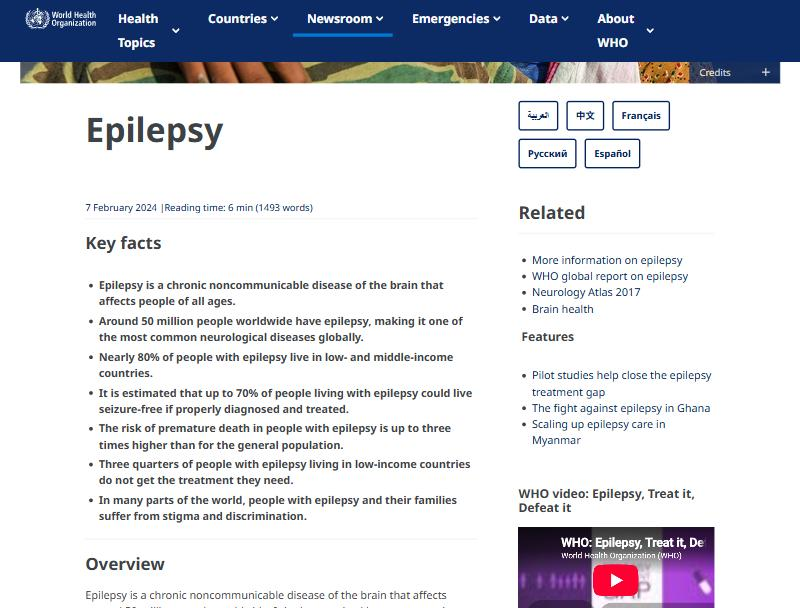
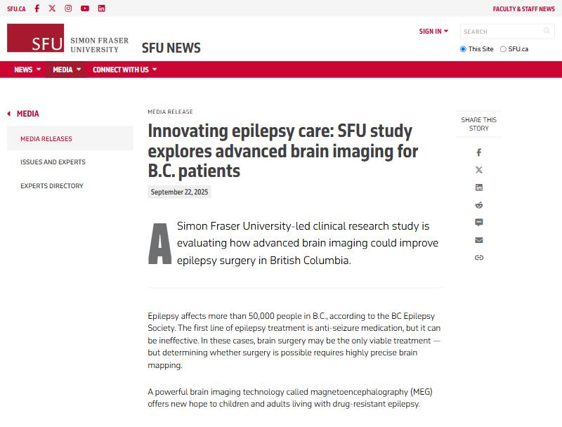
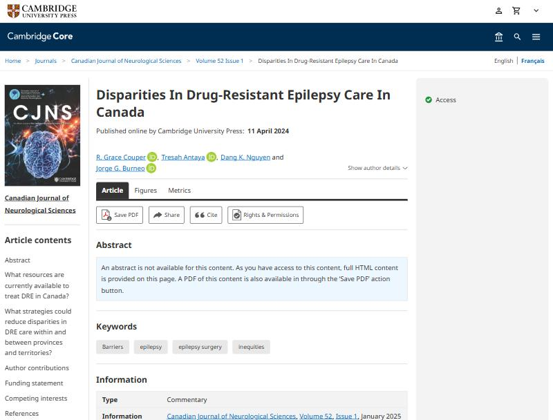
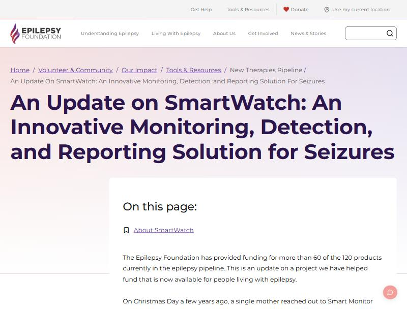
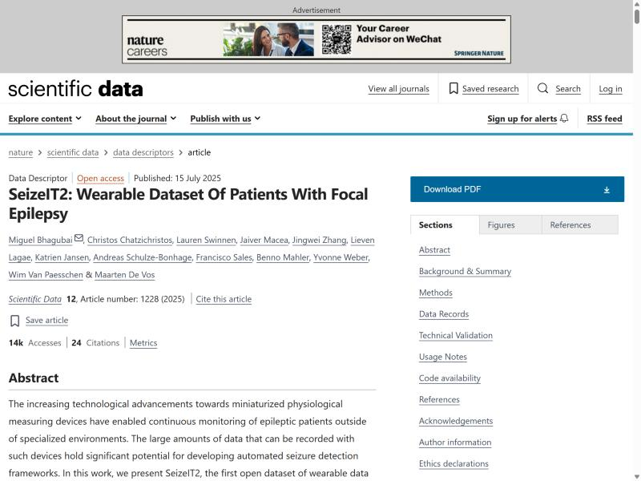
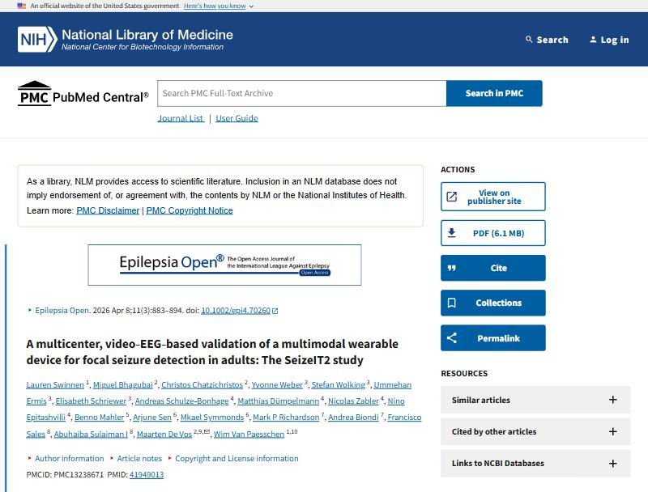
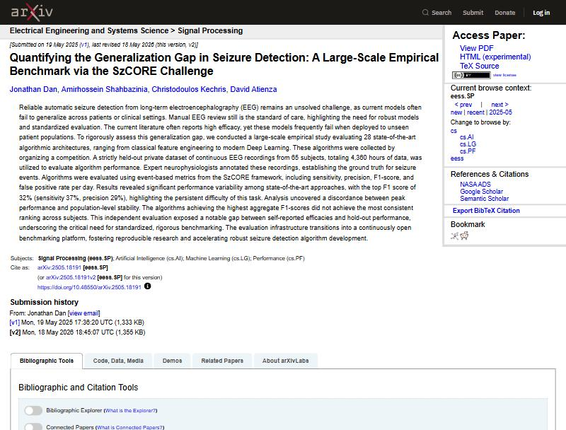
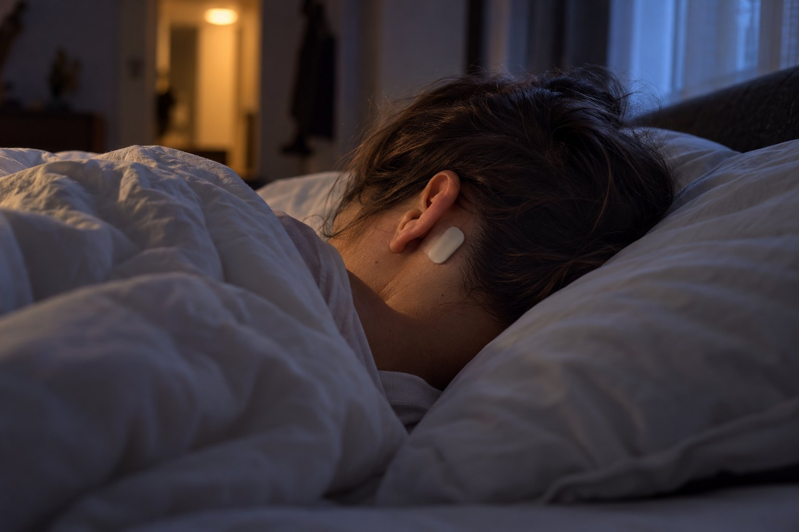

Safety
SUDEP happens after convulsive seizures nobody saw. Nocturnal supervision is one of the few known protective factors — and it is exactly what a device could provide.
Epilepsy in numbers, the gaps in care in Canada and British Columbia, and what a seizure detector that works at home would change.
Every figure below is from the cited source; nothing is rounded up.
Safety, treatment, access and trust all fail at the same point: nobody is counting the seizures.
SUDEP happens after convulsive seizures nobody saw. Nocturnal supervision is one of the few known protective factors — and it is exactly what a device could provide.
Neurologists adjust medication on diaries that miss more than half of all seizures. A wrong count means a wrong dose, for years.
The only reliable count comes from video-EEG in an epilepsy monitoring unit. BC has 0.83 beds per 1,000 refractory patients; seven provinces and territories have none. Patients wait months to over a year, and sometimes the seizure does not happen during the stay.
Consumer seizure watches sense movement, so they catch convulsions and miss the other 94 % of focal seizures, and their false alarms lead families to switch them off.
ICTRA's question follows from the gaps: can two behind-the-ear EEG electrodes, a chest ECG and an arm EMG, read by one model, count seizures at home with clinically useful sensitivity and fewer than one false alarm a day — on patients the model has never seen?
Screenshots of the actual pages, captured 17–18 October 2026, each linked to its source.

The global baseline: 50 million people, up to 70 % treatable, risk of early death up to three times higher. who.int ↗

"Epilepsy affects more than 50,000 people in B.C." Pre-surgical video-EEG "requires patients to stay in the hospital for extended periods … and sometimes seizures don't occur in the hospital environment." sfu.ca ↗

Seven of 13 provinces and territories have no EMU beds; BC has 0.83 beds per 1,000 refractory patients, the lowest where beds exist. cambridge.org ↗

Consumer devices track movement and heart rate: useful for convulsive seizures, blind to non-motor ones. epilepsy.com ↗

125 patients, 11,626 hours, 883 seizures, behind-the-ear EEG + ECG + EMG + movement, released openly (CC0). The first dataset that makes a project like this possible. nature.com ↗

Behind-the-ear EEG + ECG: 0.73 sensitivity but 149 false alarms a day on its own; 0.31 after a human reviewer. The published state of the art for this device class — our reference point. pmc.ncbi.nlm.nih.gov ↗

28 algorithms, blind-tested on 65 unseen patients: the best reached F1 32 %; self-reported scores of 80–90 % did not survive. Why ICTRA locks its test set. arxiv.org ↗

A device that costs a few hundred dollars and sits behind the ear, on the chest and on the shoulder wakes someone about half a minute into a convulsive seizure — and does not cry wolf ten times a night. A tonic-clonic seizure usually lasts one to three minutes, so half a minute still leaves time to reach the person. Today that witness is a hospital bed or a watch that only knows convulsions.
A seizure count backed by signals instead of memory, with an honest statement of what the device can and cannot see by seizure type — the difference between a monitoring tool and a gadget.
Measure the brain–heart–muscle timing first, then design the fusion; let a multi-signal model teach a single-sensor device; test on locked and external patients and publish every number, including the failures. See dead ends and where ICTRA stands.
ICTRA is a student research prototype. It is not a medical device and must not replace prescribed monitoring or guide medication.